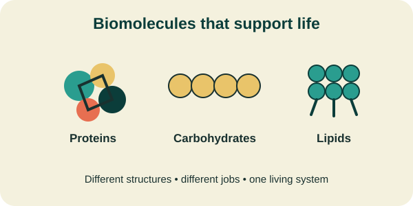

Proteins
Discover how proteins support body structures, transport substances, and perform important functions.
Discover the chemistry of life
Biochemistry helps us understand the molecules and chemical reactions that keep living organisms alive. Explore how proteins, carbohydrates, lipids, enzymes, and ATP work together in the human body.
Explore BiomoleculesWhy biochemistry matters
Every living organism depends on chemical processes. Digestion breaks food into smaller molecules, enzymes help reactions take place, and cells use energy to carry out their activities. Studying biochemistry helps us understand these processes and how they relate to health, medicine, and the human body.

Start exploring
Learn about the molecules and processes that support life.
Discover how proteins support body structures, transport substances, and perform important functions.
Learn how carbohydrates provide energy and contribute to important biological structures.
Explore how fats and other lipids store energy and help form cell membranes.
Understand how enzymes speed up chemical reactions without being consumed by those reactions.
Choose your learning path
Select a topic that interests you. Your preference will be saved in this browser so you can find it again later.